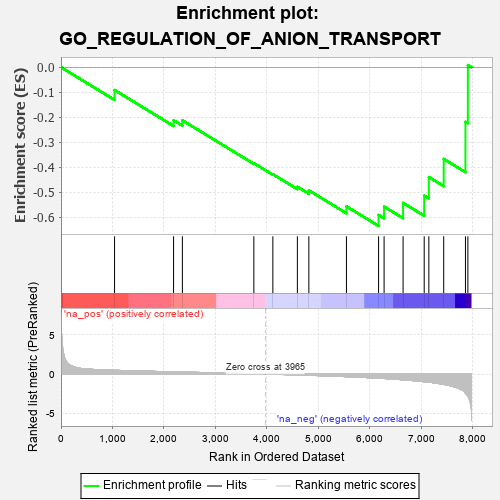
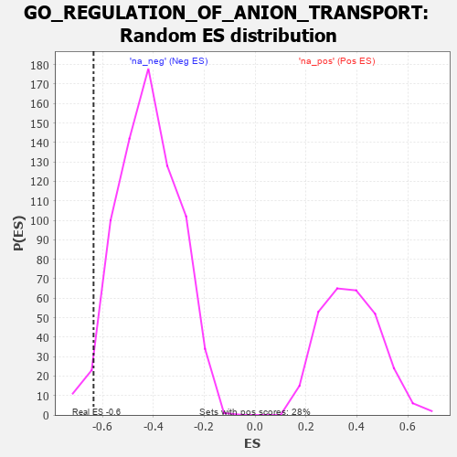

| | | Dataset | 7d |
| Phenotype | NoPhenotypeAvailable |
| Upregulated in class | na_neg |
| GeneSet | GO_REGULATION_OF_ANION_TRANSPORT |
| Enrichment Score (ES) | -0.6350558 |
| Normalized Enrichment Score (NES) | -1.5064639 |
| Nominal p-value | 0.02503477 |
| FDR q-value | 0.18480086 |
| FWER p-Value | 1.0 |
Table: GSEA Results Summary

Fig 1: Enrichment plot: GO_REGULATION_OF_ANION_TRANSPORT
Profile of the Running ES Score & Positions of GeneSet Members on the Rank Ordered List
| PROBE | GENE SYMBOL | GENE_TITLE | RANK IN GENE LIST | RANK METRIC SCORE | RUNNING ES | CORE ENRICHMENT | | 1 | AKT1 | | | 1040 | 0.476 | -0.0912 | No |
| 2 | SYK | | | 2186 | 0.278 | -0.2120 | No |
| 3 | MIF | | | 2357 | 0.252 | -0.2124 | No |
| 4 | HTR1B | | | 3745 | 0.035 | -0.3839 | No |
| 5 | MTOR | | | 4114 | -0.025 | -0.4281 | No |
| 6 | SYT4 | | | 4590 | -0.116 | -0.4782 | No |
| 7 | P2RX4 | | | 4813 | -0.161 | -0.4927 | No |
| 8 | FGFR1 | | | 5543 | -0.332 | -0.5568 | No |
| 9 | GOPC | | | 6167 | -0.528 | -0.5912 | Yes |
| 10 | STK39 | | | 6274 | -0.563 | -0.5578 | Yes |
| 11 | ACSL5 | | | 6643 | -0.737 | -0.5428 | Yes |
| 12 | GRM5 | | | 7053 | -0.969 | -0.5138 | Yes |
| 13 | CFTR | | | 7143 | -1.030 | -0.4394 | Yes |
| 14 | KMO | | | 7432 | -1.308 | -0.3670 | Yes |
| 15 | TCAF2 | | | 7854 | -2.428 | -0.2183 | Yes |
| 16 | TCAF1 | | | 7901 | -2.803 | 0.0088 | Yes |
Table: GSEA details [plain text format]

Fig 2: GO_REGULATION_OF_ANION_TRANSPORT: Random ES distribution
Gene set null distribution of ES for GO_REGULATION_OF_ANION_TRANSPORT